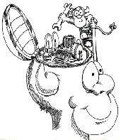
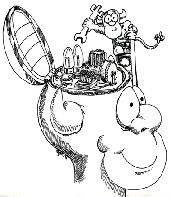

![[OpenBSD]](images/obsd.gif) The OpenBSD project involves continuing development of a free,
multi-platform 4.4BSD-based UNIX-like operating system with emphasis
on portability, standardization, correctness, and security.
Our current release is 2.1, released on June 2 1997.

The OpenBSD project involves continuing development of a free,
multi-platform 4.4BSD-based UNIX-like operating system with emphasis
on portability, standardization, correctness, and security.
Our current release is 2.1, released on June 2 1997.

About OpenBSD
Getting OpenBSD
OpenBSD Resources
For faster service, use a mirror of this site
closest to you:
[USA]
[Canada]
[Sweden]
[UK]
[UK-JANET]
[Italy]
[Australia]
[Russia]
OpenBSD cartoon by Shawn Mueller;
This site Copyright © 1996, 1997 OpenBSD.
$OpenBSD: index.html,v 1.139 1997/08/16 07:19:22 jkatz Exp $